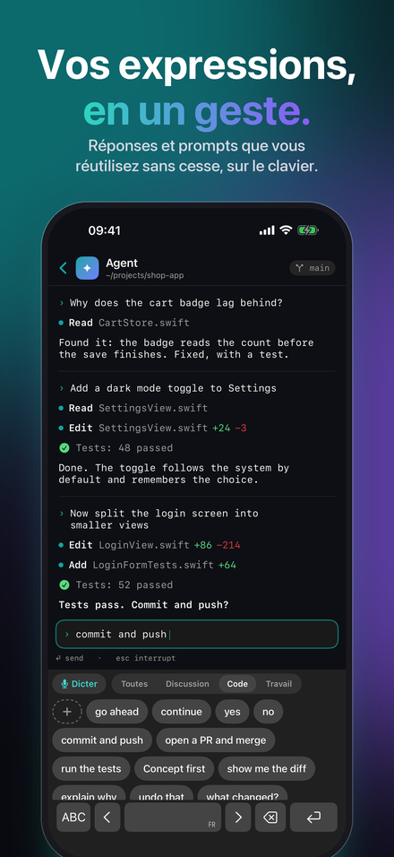
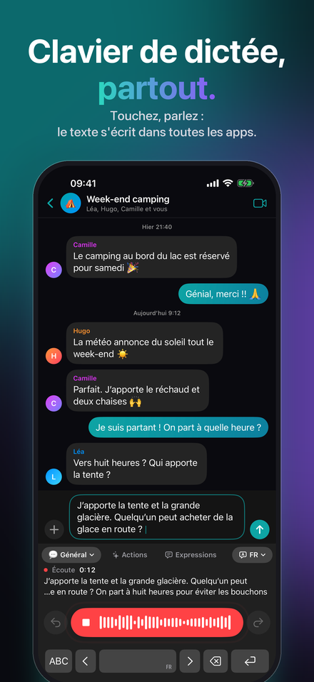
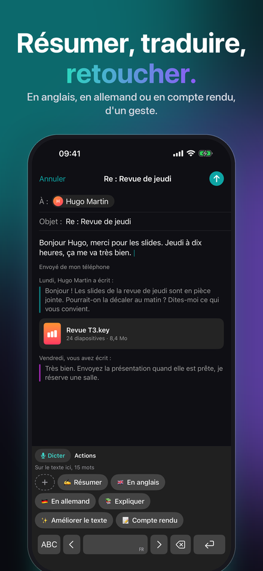
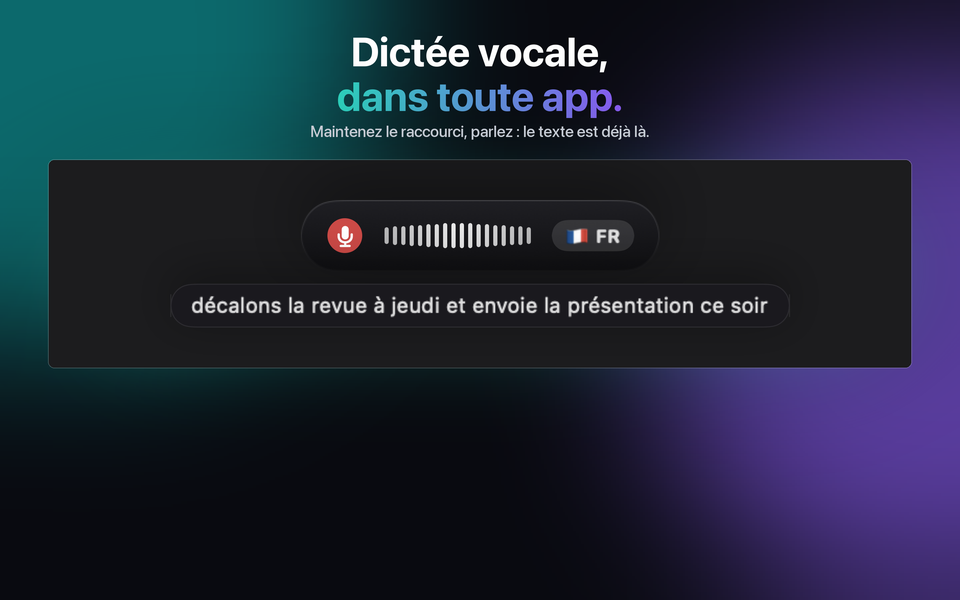
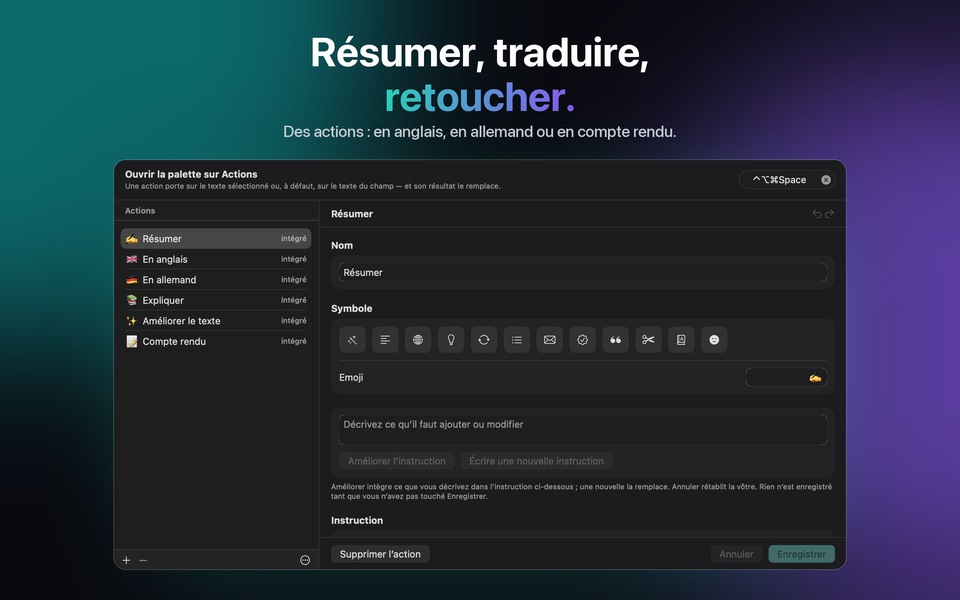
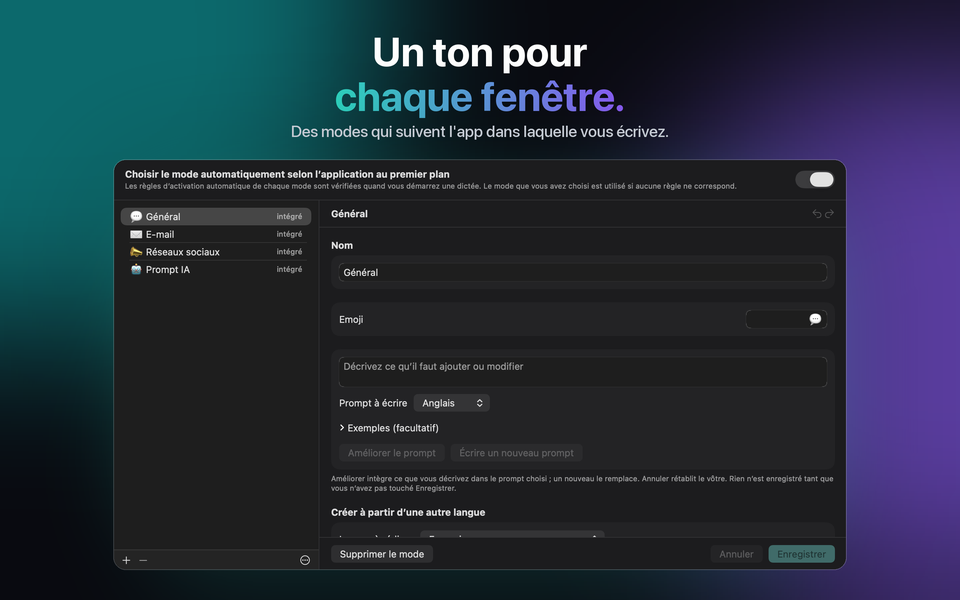

Pour Mac, Windows, iPhone et iPad
Dictée vocale et transcription
Vous parlez. Il écrit. JustTalk, c'est la dictée vocale pour votre Mac : votre voix en texte dans n'importe quelle appli, transcription peaufinée par l'IA.



Obtenir JustTalk
La même app sur chaque plateforme, avec les mêmes modes, les mêmes langues et le même choix entre local et cloud. Chacune s'achète une fois dans sa propre boutique : l'App Store pour Mac, iPhone et iPad, le Microsoft Store pour Windows. Sur Mac, iPhone et iPad, iCloud garde vos modes, expressions, actions et réglages identiques ; Windows suit par le fichier de configuration.
macOS
macOS 14 ou ultérieur, Apple silicon ou Intel. Dictez dans n'importe quelle app avec un raccourci.
Windows
Windows 10 (1809) ou ultérieur, x64, x86 ou ARM64. L'installeur est un MSIX signé.
iPhone & iPad
iOS et iPadOS 26 ou ultérieur. Un clavier depuis lequel dicter dans n'importe quelle app, et un menu de partage pour les enregistrements que vous avez déjà.
Ce qu'elle fait
D'habitude, un logiciel de dictée vous laisse une transcription brute et vous laisse la mettre au propre vous-même. JustTalk termine le travail : appuyez sur une touche, parlez, et la phrase mise au propre est collée directement dans l'appli déjà au premier plan — aucune fenêtre à rejoindre, rien à recopier.
Écrit, pas seulement transcrit
Un modèle de langage retire les euh et corrige la ponctuation. Ce qui atterrit dans le champ est un texte que vous auriez pu taper vous-même.
Local ou cloud, à vous de voir
Whisper et un modèle local tournent entièrement sur votre propre ordinateur, gratuitement et hors ligne. Ou connectez Google, OpenAI, Groq, Mistral ou Anthropic avec votre propre clé et payez-les directement.
100 langues
Détectées pendant que vous parlez, y compris en plein milieu d'une phrase. Aucun réglage à changer quand vous passez de l'une à l'autre.



Ce qu'elle coûte
L'app, c'est un seul paiement. Les modèles sont gratuits si vous les faites tourner en local, et facturés à l'usage si vous passez par un fournisseur cloud — par lui, pas par nous. Dix minutes de dictée par jour sur Groq reviennent à bien moins d'un dollar par mois aux tarifs de septembre 2026 ; 45 minutes par jour en usage intensif tournent autour d'un à trois dollars. Tout est débloqué pendant sept jours, rien n'est retenu, et aucune carte n'est demandée.
Après l'essai, la version gratuite continue de fonctionner, chaque jour : 2 dictées de 30 caractères au plus, 5 expressions, 5 actions et, sur iPhone et iPad, 5 corrections de saisie. JustTalk Pro rend tout illimité en un seul paiement — avec un service d'IA dans le cloud, l'usage n'est alors limité que par votre accès à ce service. Ce n'est pas un abonnement, et il n'y a rien à résilier.
Comment on l'utilise
E-mails et messagerie
General s'occupe du quotidien ; les autres modes ont leur propre ton et leur propre vocabulaire, et le bon peut être choisi automatiquement selon l'appli dans laquelle vous dictez.
Réunions
Capturez les deux côtés d'un appel et obtenez la transcription de toute la conversation, pas seulement de votre moitié.
Expressions et Actions
Ce que vous écrivez sans cesse est à portée d’un toucher, sur le clavier de l’iPhone et dans la palette de l’ordinateur. Une Action réécrit la sélection, ou tout le champ, selon une instruction que vous écrivez — ou que le modèle écrit pour vous.
Taper sur iPhone
Le clavier JustTalk a aussi toutes les lettres, et « Corriger ma saisie » range ce que vous avez tapé dès que vous marquez une pause : fautes de frappe, majuscules, ponctuation — jamais vos formulations.
Enregistrements
Un mémo vocal, un cours, une interview : ouvrez-le ou partagez-le avec JustTalk et obtenez la transcription, sur chaque plateforme.
Local ou cloud : vous décidez, et nous disons ce que chacun coûte
JustTalk est l'app autour des modèles, pas les modèles. Faites-les tourner en local — Whisper plus un modèle de langage local via llama.cpp, Ollama ou LM Studio — et rien n'est envoyé, rien n'est facturé, aucun compte n'existe. Cette option est tout aussi aboutie et demande un Mac ou un PC avec de la mémoire disponible ; sur iPhone et iPad, la reconnaissance sur l'appareil s'en charge pour la dictée. Ou connectez un fournisseur cloud avec une clé que vous créez : plus rapide et plus précis, et il vous facture directement votre usage. Aucune analyse, aucun suivi, aucun compte chez nous dans les deux cas. La politique de confidentialité indique précisément ce que chaque option envoie. Dans l'appli, « Vos données et l'IA » montre à tout moment où vont votre voix et votre texte, et la déclaration sur l'IA dit quelle IA fait quoi.
Dictez en 100 langues, dont l'anglais, l'allemand, le français, l'espagnol, l'italien, le portugais, le japonais, le coréen, le grec, l'ukrainien et le russe.
JustTalk
Gratuit à l'essai, débloqué par un seul achat. Mac, Windows, iPhone et iPad, 100 langues, et rien n'est envoyé sans que vous le demandiez.